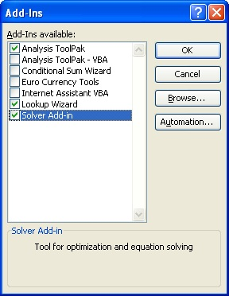

Section 10: Import Code and Configure Excel File from Scratch
- Source code files
- The source code is in CXTFITxxxxxxxx.BAS, which includes all of the functions and subroutines (Macros)
- DlgJacobian.frm, DlgJacobian.frx
- DlgMonteCarloAnalyze.frm, DlgMonteCarloAnalyze.frx
- DlgOptions.frm, DlgOptions.frx
- DlgPropagate.frm, DlgPropagate.frx
- DlgResponse.frm, DlgResponse.frx
- DlgSolve.frm, DlgSolve.frx
- DlgAbout.frm, DlgAbout.frx
- Import source code
- Import CXTFIT/Excel source code
- Configure Solver Reference in Visual Basic Editor
- Add code to manage menu CXTFIT
The user-friendly interfaces (dialogs) are provided in the following files:
Open a new Excel file if not opened.
Install Solver if not installed.
If Solver is installed, the menu item Solver is added in the menu Tools. If not installed, Select Menu->Tools->Add-Ins... to open the Add-Ins dialog (Fig. 10.1).

Fig. 10.1 Add-Ins dialog to install Solver
Select menu Tools->Macro->Visual Basic Editor or press Alt+F11 to open Microsoft Visual Basic Editor (Fig. 9.2).
Fig. 10.2 Add-Ins dialog to install Solver
Select menu File->Import File or press Crtl+M to open the Import File dialog (Fig. 10.3).
Fig. 10.3 Import File dialog to import source code
Select one file at a time, and press Open to import the file. Import all of the files listed in #2.
In Visual Basic Editor, select menu Tools->References... to open References-VBAProject dialog (Fig. 10.4).
Fig. 10.4 References-VBAProject to set references to Solver
Check Solver, and click OK. Close Visual Basic Editor and now CXTFIT/Excel is appropriately configured. You may save the file as a blank CXTFIT/Excel template file.
In the case of not finding Solver in available references list, our experience is to go back to Excel, run Solver by selecting menu Tools->Solvers, and then close Solver. Then open Visual Basic Editor and select menu Tools->References... to open Reference-VBAProject dialog again. Usually, Solver will show up in the list.
Select ThisWorkbook (Fig. 10.2), add code like Fig. 10.5 so that the CXTFIT menu will be added when this workbook is activated and removed when the workbook is deactivated.
Fig. 10.5 Add code to manage menu CXTFIT